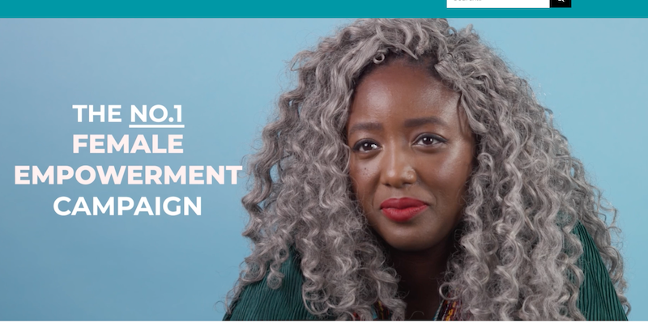
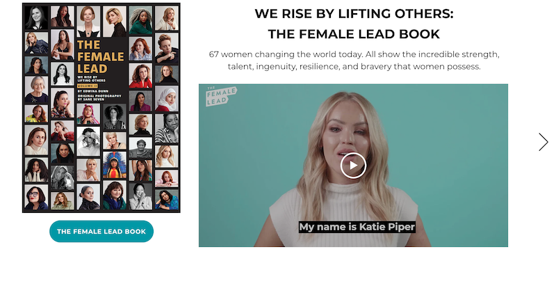
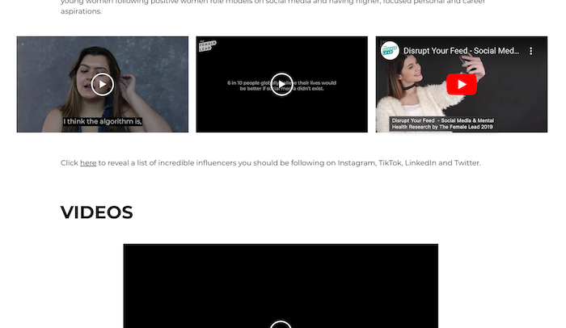
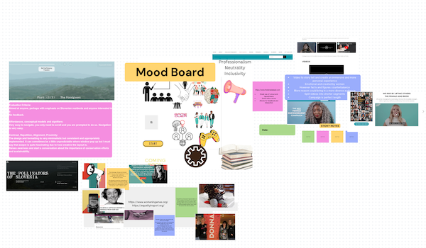
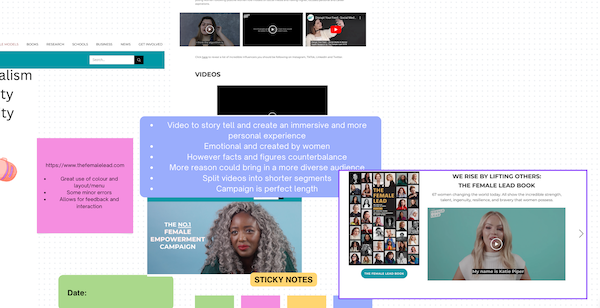

IL Activity 9
Task 1:
https://www.thefemalelead.com/
What are the videos used for?
I was very fascinated by their choice of replacing images by videos.
Right on the homepage, you are greeted by a moving image of a woman beside textual elements.

However, they use full video links inserted from YouTube. The following image is their video campaign on their homepage:

Can you find evidence of video used with intent, which enhances information comprehension, retention and appeal?
For example, their 'Positive Role Models' section only contains video. They replaced text by strictly videos to create a heart-warming touching narrative. They interview women and little girls to tell their stories through which they contextualise their cause.

What benefits and caveats of video use can you witness?
There seems to be some sort of error when clicking on the 'Role Model' tab. At first, it displays a variety of videos that disappear after a second or two. I also cannot seem to find them after I scroll down the page.
Otherwise, the use of video campaigns is great but they can be seen as overly emotional and not rooted in logic. They balance this with resources and ways to help out by donating or getting involved. However, most videos are used as attention-grabbers with a few exceptions that were used to tell personal stories.
Is the length of videos suitable?
They are hovering around one minute which is ideal to get a simple message across. The longer videos are around 5 minutes. I would perhaps split the storytelling into categories or various segments. I assume most people only watch the campaigns and skip over anything longer than 3 minutes. If they split the videos and titled them with captivating one liners, people would be encouraged to listen.
How is video combined with other media (images, text, audio) in order to synthesise a multimedia production?
Evaluation Criteria:
Understanding your audience:
Can you tell who the project is aimed at?
I would say everyone, however, it looks more appealing to women than men. The design also looks very gender inclusive with their use of teal and white. I would say that bringing some facts and figures above the videos would help their cause. Firstly, they would assert themselves as credible and then go onto telling personal emotional stories etc.
Does the range and depth of material seem appropriate for the topic and audience?
Yes, but the structure could be improved to support their case.
Does the project provide any means of feedback or interaction?
Yes, you can easily contact them on almost every page and they make it clear they are open to discussion and feedback. You can also donate or spread the word.
Affordances, conceptual models and signifiers:
How easy or complex is the project to use/navigate?
Easy enough, except for the occasional glitch, it works well and is easy to navigate with the header.
Can you tell where you have been, where you are and where you can go?
Yes, again the menu is well displayed.
How does the site use images, text, sound and moving images - are they just illustration or something more?
They are using a well balanced variety I must say. There are vector graphics, raster photos and plenty of videos. The graphics are used sometimes instead of titles or to supplement a statistic or fact.
Contrast, Repetition, Alignment, Proximity:
Does it make effective use of layout? For example: the positioning of information; does the background image or colour enhance the presentation of information; are the foreground and/or text colours contrasted sufficiently?
I would say I am very pleased with the layout. The only thing is that sometimes I felt like I was endlessly scrolling and found some very relevant info at the bottom of the page. As mentioned above, I would either bring it up or create more tabs. However, the colours we picked perfectly. The combination of white and teal is not overly bright and you do not get tired by looking at it. It is not aggressive and rather calming. It again is also veri inclusive and supports their message and tone.
Does it use symmetry and balance to good effect?
Yes, I do not have any problems with asymmetry or confusing layout.
Is the information, navigation, graphics etc. laid out in a consistent way?
Yes, but they could be more consistent with the length of each tab/section.
Benefits for interaction, experience, social change?
They are definitely covering as much as they can here. They bring in useful resources, links, ways to donate and get involved. You can contact them and they do not seem to be apprehensive about the idea of getting any sort of feedback.
What is the purpose of the project?
Equality.


Task 3:
The high quality image is perfect when enabling full screen mode. I do not belive it tobe necessary when building a text-heavy informative website which uses video to supplement to sources
The medium quality is a standard looking video you would watch on YouTube or many webssites, whether that is professional or amateur. It should not take a slong to load and should be accessible on most devices and web browesers.
The low quality video could be appropriate for previews or very small windows. Th quality is too compromised to enjoy a full immersive experince, so I would stray away from using this in most cases.